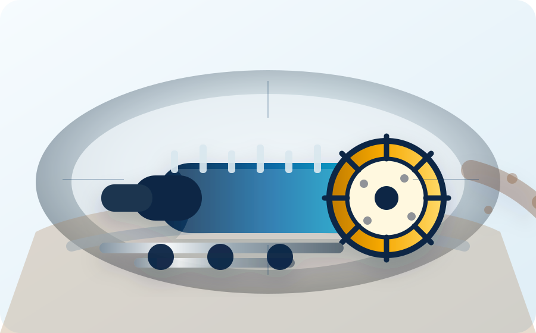

PO
Pablo Ortiz
Coordinación general del equipo, integración tecnológica, sensores, comunicaciones y visualización de datos.
Facultad de Ingeniería · Universidad del Desarrollo
Somos UDD Tunnel Lab, un equipo interdisciplinario de estudiantes y profesores que busca diseñar, fabricar y validar una máquina tuneladora experimental para enfrentar uno de los desafíos de ingeniería más entretenidos del mundo.
La Not-a-Boring Competition reúne equipos de todo el mundo para diseñar, construir y probar sus propias tuneladoras durante el año, y luego competir presencialmente intentando superar el desafío de “beat the snail”. Desde Chile queremos levantar el primer equipo sudamericano en llegar a esta competencia.
La competencia
The Not-a-Boring Competition es una competencia organizada por The Boring Company que desafía a equipos universitarios y técnicos a desarrollar nuevas soluciones de excavación subterránea. El objetivo es claro y provocador: construir máquinas tuneladoras capaces de competir, aprender rápido y acercarse al famoso lema “Beat the snail”.
Los equipos trabajan durante el año en el diseño, construcción y prueba de sus máquinas. Luego participan en una competencia presencial, donde se evalúan aspectos como avance de excavación, diseño, innovación, seguridad, navegación y desempeño del sistema completo.
Para UDD Tunnel Lab, esta competencia es una plataforma de aprendizaje aplicado: integra mecánica, minería, obras civiles, informática, automatización, control, sensores, manufactura, gestión de proyectos y vinculación con la industria.
Partners
Espacio reservado para instituciones, empresas y laboratorios que apoyen el desarrollo del equipo.
Quiénes somos
Estudiantes y profesores de distintas carreras trabajando en sistemas mecánicos, control, software, minería, obras civiles, gestión y vinculación con la industria.
Coordinación general del equipo, integración tecnológica, sensores, comunicaciones y visualización de datos.
Diseño mecánico, prototipado, análisis de componentes y desarrollo de subsistemas de la máquina.
Reemplazar por foto, bio breve, grupo de trabajo y enlaces personales.
Reemplazar por foto, bio breve, grupo de trabajo y enlaces personales.
Nuestra máquina
Esta sección será actualizada con fotografías, renders, diagramas CAD y resultados de pruebas a medida que avance el desarrollo.

Imagen referencial: reemplazaremos esto por renders y fotos de nuestra máquina.
FAQ
UDD Tunnel Lab es un equipo interdisciplinario de estudiantes y profesores de la Universidad del Desarrollo. Nuestro propósito es diseñar, fabricar y probar una micro-tuneladora para representar a Chile en The Not-a-Boring Competition.
Es una competencia internacional organizada por The Boring Company que invita a equipos de distintas universidades a desarrollar máquinas tuneladoras experimentales. El desafío busca impulsar nuevas ideas para excavar túneles de forma más rápida, eficiente, segura e innovadora.
La edición 2027 está anunciada para desarrollarse en Bastrop, Texas. Aunque la competencia presencial ocurre durante una semana de pruebas y desafíos, el trabajo real comienza mucho antes: investigación, diseño, fabricación, validación y preparación del equipo.
Puedes completar el formulario de inscripción del equipo. Buscamos estudiantes con ganas de aprender, aportar y comprometerse con alguno de los subsistemas o áreas de apoyo del proyecto.
No es indispensable tener experiencia técnica previa. Hay tareas para distintos niveles de formación y el equipo funciona como un espacio de aprendizaje aplicado. Lo más importante es la motivación, la responsabilidad y la disposición a trabajar colaborativamente.
Sí. El equipo está abierto a estudiantes de distintos años y carreras. Quienes tienen más experiencia pueden apoyar como mentores, mientras que quienes recién comienzan pueden integrarse a tareas progresivas de investigación, diseño, fabricación, documentación o gestión.
La dedicación dependerá del área de trabajo, la etapa del proyecto y la disponibilidad de cada integrante. En general, esperamos una participación constante durante el semestre, con mayor intensidad cerca de entregables, pruebas, hitos técnicos y actividades de difusión.
La competencia reúne equipos universitarios de distintos países. Para nosotros, el desafío es representar a la Universidad del Desarrollo, a Chile y eventualmente a Sudamérica en una instancia internacional de ingeniería aplicada.
No se trata solo de excavar más rápido. También importan la calidad del diseño, la seguridad, la navegación, el control, la innovación, la confiabilidad, la documentación técnica y la capacidad del equipo para operar la máquina en condiciones reales de prueba.
Además de los premios y reconocimientos de la competencia, participar abre oportunidades de aprendizaje, colaboración internacional, contacto con empresas, desarrollo de tecnología propia y visibilidad para estudiantes, profesores, sponsors y la universidad.
Podrás desarrollar habilidades técnicas y profesionales en diseño mecánico, automatización, sensores, software, fabricación, minería, obras civiles, gestión de proyectos, comunicación, búsqueda de sponsors y resolución de problemas complejos en equipo.
Prensa
Sección reservada para notas, entrevistas, comunicados y publicaciones sobre el avance del equipo.
Publicaremos aquí las primeras noticias del equipo.
Registro de hitos de diseño, fabricación y pruebas.
Contacto
Buscamos estudiantes, mentores, empresas e instituciones que quieran sumarse a este desafío.